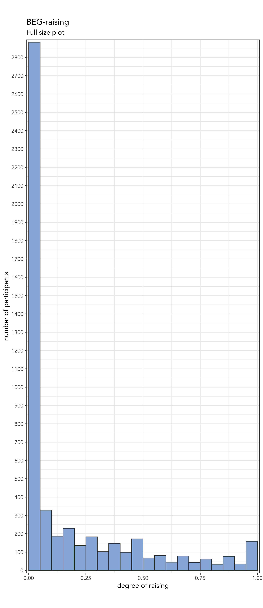
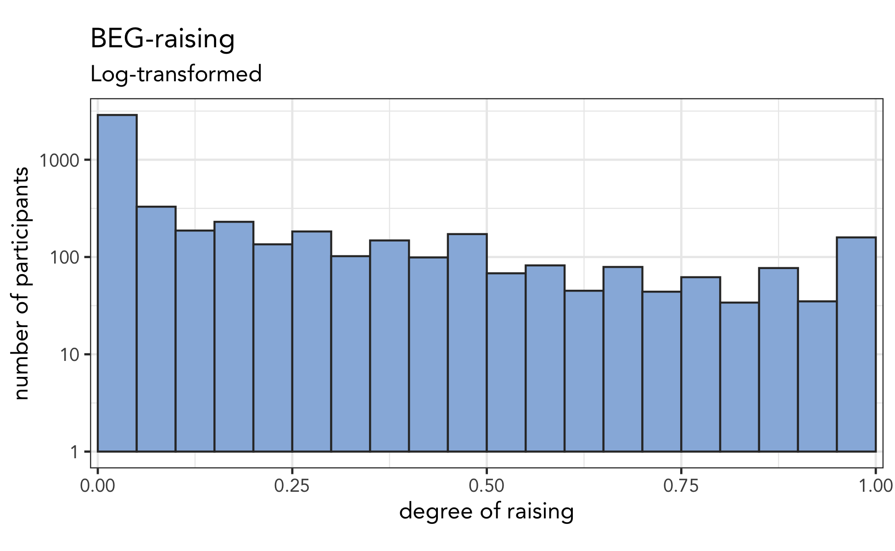
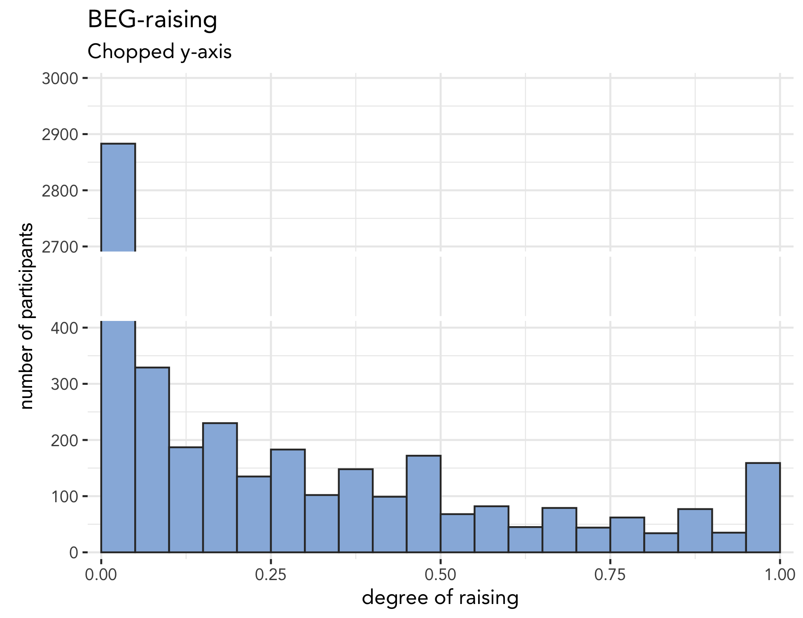
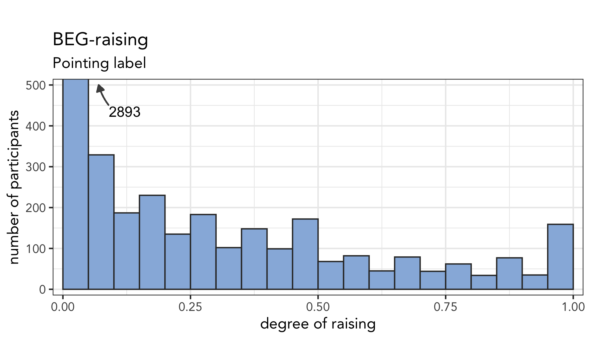
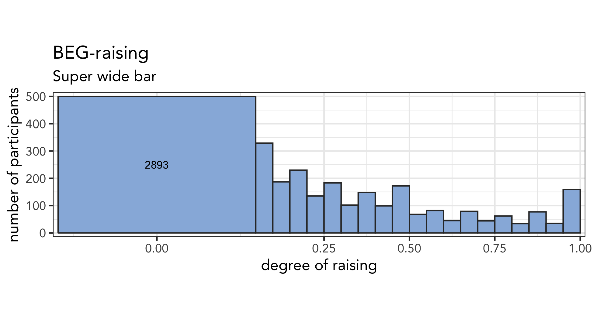
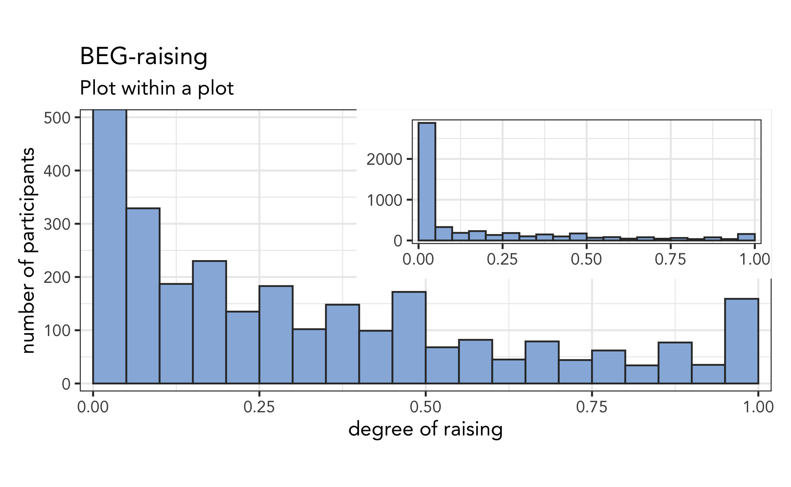
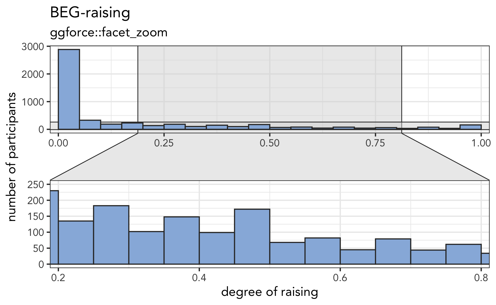

Earlier this week, I tweeted about a data visualization that I made. I said:
Okay, I’m trying something out. I have this histogram with one very tall bar and many shorter ones. So to save space, I made that tall bar follow the edge of the plotting area boustrophedonically—my favorite word!—but I’m not sure if I like it. Thoughts?
I then showed a plot that looked something like this:

The data, which comes from a paper I’m working on, is difficult to visualize because the vast majority of the responses is clustered around zero while the rest is spread out a bit. I continued:
I’m trying to show that the one bar is huge compared to the others, but at the same time I want to show the detail in the smaller bars. Data transformations haven’t seemed to work. No matter what I try I can’t seem to find an effective visualization.
I got lots and lots of comments from people and people’s thoughts were all over the board. Some said it’s great; others said they didn’t like it. And there were a handful that had very strongly mixed feelings of loving it and hating it. It’s a new kind of plot, so interpretation isn’t super straightforward, but it’s funny, silly, surprising, interesting, and memorable, which is why I think it’s a good one.
Boustrophewhat??
The way the tallest plot sort of goes back along the top can be perfectly described in one fantastic word: boustrophedonically. It’s my favorite word ever. The word has its roots in describing how an ox plows a field and can also describe how Ancient Greek was written. Nowadays, older Millennials just think of playing Snake on a brick phone. You might think it’s so obscure, so long, and so specific that no one could ever find a use for it, but I did manage to find a way to use it twice in a previous blog post about Chutes and Ladders.
I first saw plots like these when reading one of Edward Tufte’s books. I don’t have them on me, but I believe it was in The Visual Display of Quantitative Information. Guthrie McAfee Armstrong points out that that W. E. B. Du Bois used this technique in his visualizations from well over 100 years ago. I believe Tufte showed some of these plots. You can see some of those original visuals in this Medium article that Matthew Kay pointed me to.
I got lots of great suggestions from people on Twitter, so I thought I’d try out their suggestions so you can judge for yourself which one is the best. I’ll try to credit everyone who made the suggestions: this was truly a group effort here!
The full height
Jack Grieve and jordan t. thevenow-harrison suggested I just plot all the data on a mega y-axis. Well, because the first bar is so stinking huge, I’d have to make the plot suuuuuper tall.

This way of visualizing data is not always bad: on March 27, 2020, the New York Times made an epic plot showing unemployment numbers for that week. But for my data, I don’t know if it’s quite right. Though, see this relevant xkcd that Rodolpho Piskorski delightfully reminded me of!
Log-transformed
When you’ve got wildly different heights like this, the first step is to do a transformation of some sort. Christian DiCanio recommended a log transformation like this:

While it does show all the bars at once, I just can’t fully appreciate the magnitude of the biggest one.
Split the y-axis
A common technique for something like this would be to split the yaxis so that there’s a discontinuity and several people recommended this route.
As Hadley Wickham mentions here, there’s no native way in ggplot2 to do a discontinuous y-axis, so I had to sort of fudge it with patchwork. Here’s what that plot might look like:

This method is generally frowned upon though since the amount of real estate devoted to the big plot is disproportionate to the amount of data it actually represents so it hides the magnitude of that big bar.
Pointing arrow
One workaround is to zoom in to the smaller bars, and just give an indicator of how tall the big one is. I just text with an arrow pointing up.

This was one that I’ve been considering for a while now, but again, the problem is the real estate issue and it’s difficult to fully appreciate the actual height of that plot.
Chunky first bar
TJ Mahr’s funny recommendation was to, instead of retaining the bar’s original length, make it wider.

Like the boustrophedon, it breaks the xy-coordinate system a histogram relies on, but the main strike against it is that humans aren’t good at judging areas as well as we think we are, so it only sort of does a good job at showing the size.
Plot within a plot
Honestly, I think the best workaround would be to take Joseph Casillas, Márton Sóskuthy, Timo Roetger’s, and May Helena Plumb’s recommendations and split the plot into two, one showing the big bar relative to the rest and the other showing the detail of the smaller ones. One way to do this is with a plot within a plot, which I did with the patchwork package again.

Again, probably the best recommendation if I can get that smaller plot to look decent.
Zoomed in plot
An alternative to doing the plot-within-a-plot is to make it clearer that there’s a zoom happening, so the relevant portion of the full-size plot is highlighted and linked to the zoomed in one. This is accomplished with ggforce::facet_zoom, as recommended by Justin Lo and Sandra Jansen:

In this case, I’m not a huge fan of the greyed portion in the upper plot, because it sort of gets in the ways of the bars in the y-axis.
Conclusion
So, there are lots of ways to do this. Honestly, I freaking love the boustrophedon one and I’m seriously considering including it in the paper. I ran a poll and the slight majority agreed with me:
Overall impressions?
— Joey Stanley (@joey_stan) December 17, 2020
I think because it’s so controversial and because people have such mixed feelings, it made for a really good discussion about the purpose behind the plot, faithfulness to the data, and overall aesthetics. Who knows I’d have so much fun rallying people together over some silly visual?